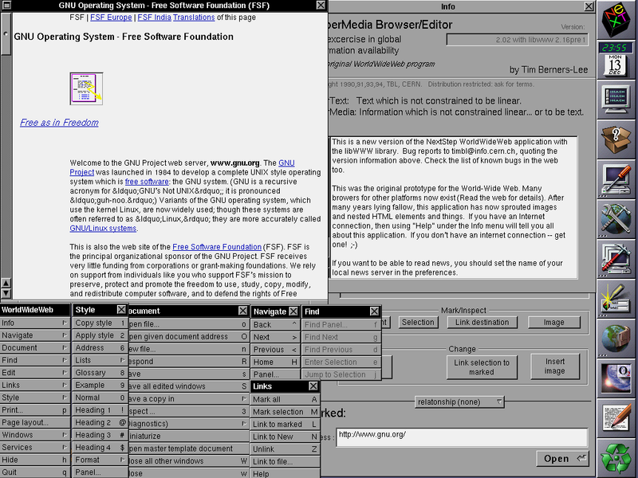

Definicón de navegadores webLa funcionalidad básica de un navegador web es perimitir la visualizacion de documentos de texto, posiblemente con recursos multimedia incrustados. Además, que permite visitar web y hacer actividades en ella, es decir, enlazar un sitio con otro, imprimir, enviar y recivir correos, entre otras funcionalidades más. |
|
Historiac El primer navegador fue desarrollado por Tim berners-Lee , en el CERNen 1990; el navegador web llamado WorldWideWeb era bastante sofisticado y gráfico, pero solo funcionaba en estaciones NeXT.Sin embargo, Netscape Navigator al poco tiempo entró en el mercado y rápidamente superó en capasidades y velosidades al Mosaic. Este navegador tuvo la ventaja de funcionar en casi todos los sitemas Unix, y tambien en entornos Windows. Internet Explorer (anteriormente Spyglass Mosaic) fue la apuesta tardía de Microsoft para entrar en el mercado y consiguió desbancar al Netscape Navigator entre los usuarios de Windows, debido a la integración del navegador con el sistema operativo, llegando a poseer cerca del 95% de la cuota de mercado. Netscape Communications Corporation liberó el código fuente de su navegador, naciendo así el proyecto Mozilla. Finalmente Mozilla (Mozilla Application Suite) fue reescrito desde cero tras decidirse a desarrollar y usar como base un nuevo conjunto de widgets multiplataforma basado en Extensible Markup Language (XML) llamado XUL y esto hizo que tardara bastante más en aparecer de lo previsto inicialmente, apareciendo una versión 1.0 de gran calidad y para muchísimas plataformas a la vez el 5 de junio de 2002. |
|
El primer buscador web |
|
Licenciatura en Sistemas Computacionales© copyright 2021. Miguel Angel Lopez Santiz |
|